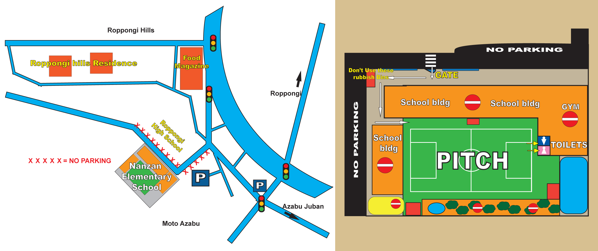

|
港区立南山小学校は、六本木ヒルズのすぐ近くに位置しています。
麻布十番、元麻布、広尾などの地域の子供達を対象にしています。
開講しているクラス
|
|
 PUPS PUPS
1:00~1:30pm
|
 BULLDOGS BULLDOGS
1:30~2:20pm
|
 LIONS LIONS
2:30~3:30pm
|
 ACADEMY ACADEMY
3:40~5:00pm
|
Ground & Footware （グラウンド及び履物について）
校庭は、安全ゴムですので、トレーニングシューズを着用して下さい。（スパイクのついたサッカーブーツは着用できません。履物チャートをご確認ください）
Getting there （行き方）
電車：
地下鉄大江戸線及び南北線の麻布十番駅下車。麻布十番商店街を六本木ヒルズ方面に向います。
商店街の突き当たり（大きな通りに出る手前）で左手の坂を１００ｍ程上がっていくと左側に南山小学校があります。（六本木高校の向かい）
車の場合
駐車場はありませんので、お子様を車で送り迎えされる場合は、六本木ヒルズなどの近隣の駐車場に駐車頂きます様お願いいたします。
悪天候の場合
小雨の場合には、南山または聖心インターナショナルスクール（広尾）の校庭で決行する場合がありますので（南山小学校校庭の状況に応じて判断します）、天候が少しでも疑わしい場合は当日の正午までに当アカデミーのFacebookにて告知いたします。
Facebook page*: https://www.facebook.com/BritishFootballAcademy
※Facebookに登録していなくても閲覧はできます。
大雨、雪（グラウンドに積雪がある場合等）、雷や悪天候により安全でない場合にはセッションはキャンセルとなります。
セッションがキャンセルになった場合に、返金や振替は行いませんので、予めご理解頂きます様お願い申し上げます。
施設利用規則
セッションご参加にあたっては、BFA members guide（メンバーガイド）の会則を必ずご一読ください。
南山への登下校
車、バイク、自転車を正門側の道路に駐停車することは禁止していますので、ご留意ください。
また、スケートボード、キックボードなどで通学、又は持参しないようにしてください。
正門はすべて常に施錠されています。通用門（ドア）の内側に手をいれて鍵を開けてお入りください。また、必ずドアを閉めるようにしてください。
南山小学校内
- 食べ物及びジュース等の飲み物は禁止です。（水・スポーツドリンク可）
- ゴミはお持ち帰りください。
- ペットは施設内立ち入り禁止です。
- BFAがセッションで使用しない施設（校内や体育館）は立ち入り禁止です。
- 鉄棒・小川や池・ジャングルジム・ブランコ・幼稚園の砂場・遊び道具、施設2階より垂れ下がっているロープの使用も厳禁ですので、ご注意ください。
- トイレは所定の場所を利用してください。校庭側に入り口があります。

トップへ
|


{kind=link}